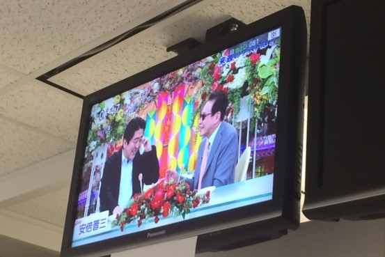

If This Is Winning, Just
Imagine Losing!
→
A key purpose for memory isn't to just remember the past, but to be able to imagine the future.
Imagine all the artwork:
Imagine if the walls of your house could talk—and tell you things like who keeps forgetting to turn off the hallway lights, or how many times has your family eaten dinner together in the last month?
Imagine downloading the blueprint to your custom home on the Internet. When you're ready to build, just hit print.
Imagine the world's most complicated mechanical cuckoo bird — hidden not in a clock but in what appears to be a double-barreled pistol.
Imagine what it will look like in another 20.
Imagine if President Barack Obama and hunky big-screen superstar Brad Pitt had a friendly telephone chat, and the normally frosty president was reduced to giggles and blushes. That is kind of what happened.
Imagine wearing three sweaters while eating a cold dinner with the lights turned off.
Imagine being introduced to a pig and watching the fuzzy young pig frolic and roll around in the dirt on a farm. Now, imagine eating that pig in a sandwich.
Imagine Ireland.
Imagine Your Korea.
Imagine what happens when you hire somebody in 24 hours.
Try to imagine health care without technology. No MRIs, X-rays or even stethoscopes
Imagine an economy that has double dipped since 2008, only clawing its way out of Technical Recession II thanks to a massive global sporting event that won't be back for a lifetime. Then imagine that same economy is one of the most indebted on Earth, in both public and private terms.

Imagine, just for the sake of argument, that the U.S. could, at some point in the future, lose its top-ranked credit rating.
Imagine having no banking relationship whatsoever – no bank account, no credit card, no debit card.
Imagine the Tweets during the Cuban Missile Crisis.
Imagine a city in China where pollution has been effectively stamped out.
Imagine Water's Future

Imagine that Saddam Hussein was still in power and our 2003 invasion never occurred. The main regional counterweight to Iran would still be in place.
Imagine how much it costs to build those tunnels and buy rockets.
Imagine there's a list somewhere that contains every single webpage you have visited in the last five years.
Now imagine two.
The Most Important Risk Is the Hardest to Imagine.
Imagine Greener Pastures.